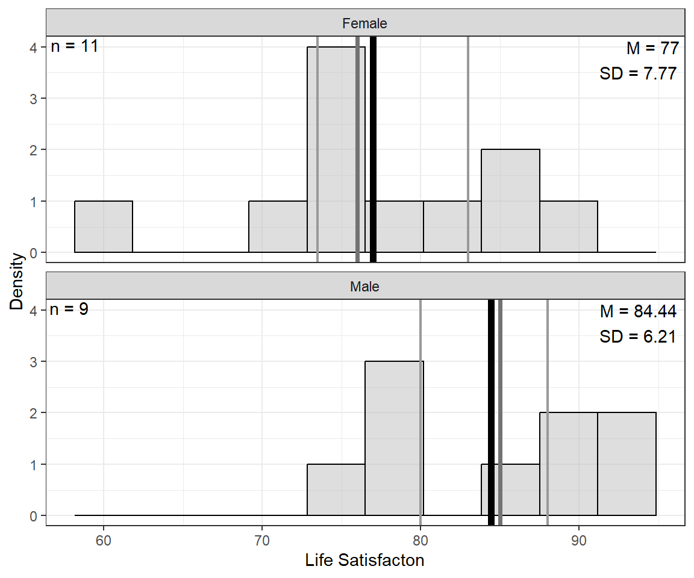

9 D&H Ch9 - Multicategorical Regressors: “married”
Compiled: September 18, 2025
Darlington & Hayes, Chapter 9’s example
# install.packages("remotes")
# remotes::install_github("sarbearschwartz/apaSupp") # 9/17/2025
library(haven)
library(tidyverse)
library(flextable)
library(apaSupp) # not on CRAN, get from GitHub (above)
library(GGally)
library(afex)
library(emmeans)
library(interactions) 9.1 PURPOSE
RESEARCH QUESTION:
RQ 1) Does life satisfaction differ by marital status?
RQ2) Is there an association between income and life satisfaction, after controlling for marital status?
9.1.1 Data Import
You can download the married dataset here:
Rows: 20
Columns: 4
$ mstatus <dbl+lbl> 3, 2, 4, 4, 1, 3, 2, 2, 3, 1, 3, 4, 1, 1, 2, 1, 3, 2, 4, 1
$ satis <dbl> 85, 80, 72, 60, 92, 88, 74, 84, 88, 82, 76, 78, 78, 93, 73…
$ income <dbl> 53, 65, 54, 35, 73, 75, 57, 59, 60, 52, 47, 60, 63, 66, 51, 53…
$ sex <dbl+lbl> 0, 1, 0, 0, 1, 1, 0, 0, 0, 0, 1, 0, 1, 1, 0, 1, 0, 1, 0, 1 mstatus satis income sex
Min. :1.00 Min. :60.00 Min. :35.00 Min. :0.00
1st Qu.:1.00 1st Qu.:75.75 1st Qu.:52.75 1st Qu.:0.00
Median :2.00 Median :80.00 Median :56.00 Median :0.00
Mean :2.35 Mean :80.35 Mean :56.90 Mean :0.45
3rd Qu.:3.00 3rd Qu.:85.75 3rd Qu.:61.50 3rd Qu.:1.00
Max. :4.00 Max. :93.00 Max. :75.00 Max. :1.00 When importing data from SPSS (.sav), you need to be careful how categorical vairables are stored.
Rows: 20
Columns: 4
$ mstatus <fct> single, divorced, widowed, widowed, married, single, divorced,…
$ satis <dbl> 85, 80, 72, 60, 92, 88, 74, 84, 88, 82, 76, 78, 78, 93, 73, 80…
$ income <dbl> 53, 65, 54, 35, 73, 75, 57, 59, 60, 52, 47, 60, 63, 66, 51, 53…
$ sex <fct> female, male, female, female, male, male, female, female, fema… mstatus satis income sex
married :6 Min. :60.00 Min. :35.00 female:11
divorced:5 1st Qu.:75.75 1st Qu.:52.75 male : 9
single :5 Median :80.00 Median :56.00
widowed :4 Mean :80.35 Mean :56.90
3rd Qu.:85.75 3rd Qu.:61.50
Max. :93.00 Max. :75.00 9.1.2 Data Description
9.1.2.1 Variables
Dependent Variable (outcome, Y)
statislife satisfaction, scale 1-100 (composite of many items)
Independent Variables (predictors or regressors, X’s)
mstatusmarital status: 1 = married, 2 = divorced, 3 = single, 4 = widowed
incomeannual income, $1000s/year
sex0 = female, 1 = male
Categorical variables MUST be declare as FACTORS and the FIRST level listed is treated as the reference category.
df_sat <- df_spss %>%
haven::as_factor() %>%
tibble::rowid_to_column(var = "id") %>%
dplyr::mutate(mstatus = forcats::fct_recode(mstatus,
"Married" = "married",
"Divorced" = "divorced",
"Single" = "single",
"Widowed" = "widowed")) %>%
dplyr::mutate(sex = forcats::fct_recode(sex,
"Female" = "female",
"Male" = "male")) %>%
dplyr::mutate(mstat_mar = forcats::fct_relevel(mstatus, "Married", after = 0)) %>%
dplyr::mutate(mstat_div = forcats::fct_relevel(mstatus, "Divorced", after = 0)) %>%
dplyr::mutate(mstat_sin = forcats::fct_relevel(mstatus, "Single", after = 0)) %>%
dplyr::mutate(mstat_wid = forcats::fct_relevel(mstatus, "Widowed", after = 0)) %>%
dplyr::mutate(male = forcats::fct_relevel(sex, "Male", after = 1)) %>%
dplyr::mutate(female = forcats::fct_relevel(sex, "Female", after = 1))Rows: 20
Columns: 11
$ id <int> 1, 2, 3, 4, 5, 6, 7, 8, 9, 10, 11, 12, 13, 14, 15, 16, 17, 1…
$ mstatus <fct> Single, Divorced, Widowed, Widowed, Married, Single, Divorce…
$ satis <dbl> 85, 80, 72, 60, 92, 88, 74, 84, 88, 82, 76, 78, 78, 93, 73, …
$ income <dbl> 53, 65, 54, 35, 73, 75, 57, 59, 60, 52, 47, 60, 63, 66, 51, …
$ sex <fct> Female, Male, Female, Female, Male, Male, Female, Female, Fe…
$ mstat_mar <fct> Single, Divorced, Widowed, Widowed, Married, Single, Divorce…
$ mstat_div <fct> Single, Divorced, Widowed, Widowed, Married, Single, Divorce…
$ mstat_sin <fct> Single, Divorced, Widowed, Widowed, Married, Single, Divorce…
$ mstat_wid <fct> Single, Divorced, Widowed, Widowed, Married, Single, Divorce…
$ male <fct> Female, Male, Female, Female, Male, Male, Female, Female, Fe…
$ female <fct> Female, Male, Female, Female, Male, Male, Female, Female, Fe… id mstatus satis income sex
Min. : 1.00 Married :6 Min. :60.00 Min. :35.00 Female:11
1st Qu.: 5.75 Divorced:5 1st Qu.:75.75 1st Qu.:52.75 Male : 9
Median :10.50 Single :5 Median :80.00 Median :56.00
Mean :10.50 Widowed :4 Mean :80.35 Mean :56.90
3rd Qu.:15.25 3rd Qu.:85.75 3rd Qu.:61.50
Max. :20.00 Max. :93.00 Max. :75.00
mstat_mar mstat_div mstat_sin mstat_wid male female
Married :6 Divorced:5 Single :5 Widowed :4 Female:11 Male : 9
Divorced:5 Married :6 Married :6 Married :6 Male : 9 Female:11
Single :5 Single :5 Divorced:5 Divorced:5
Widowed :4 Widowed :4 Widowed :4 Single :5
9.2 EXPLORATORY DATA ANALYSIS
Before embarking on any inferencial anlaysis or modeling, always get familiar with your variables one at a time (univariate), as well as pairwise (bivariate).
9.2.1 Summary Statistics
9.2.1.1 Univariate
df_sat %>%
dplyr::select("Sex" = sex,
"Marital Status" = mstatus) %>%
apaSupp::tab_freq(caption = "Description of Categorical Measures")Statistic | ||
|---|---|---|
Sex | ||
Female | 11 (55.0%) | |
Male | 9 (45.0%) | |
Marital Status | ||
Married | 6 (30.0%) | |
Divorced | 5 (25.0%) | |
Single | 5 (25.0%) | |
Widowed | 4 (20.0%) | |
df_sat %>%
dplyr::select("Annual Income" = income,
"Life Satisfaction" = satis) %>%
apaSupp::tab_desc(caption = "Description of Continuous Measures",
general_note = "Annual income is in $1000s per year. Life Satisfaction is a composite score on a scale 1-100.")NA | M | SD | min | Q1 | Mdn | Q3 | max | |
|---|---|---|---|---|---|---|---|---|
Annual Income | 0 | 56.90 | 9.35 | 35.00 | 52.75 | 56.00 | 61.50 | 75.00 |
Life Satisfaction | 0 | 80.35 | 7.90 | 60.00 | 75.75 | 80.00 | 85.75 | 93.00 |
Note. N = 20. NA = not available or missing; Mdn = median; Q1 = 25th percentile; Q3 = 75th percentile. Annual income is in $1000s per year. Life Satisfaction is a composite score on a scale 1-100. | ||||||||
9.2.1.2 Bivariate
df_sat %>%
dplyr::select(mstatus,
"Sex" = sex,
"Annual Income" = income,
"Life Satisfaction" = satis) %>%
apaSupp::tab1(split = "mstatus",
total_last = FALSE,
caption = "Description of Continuous Measures",
general_note = "Annual income is in $1000s per year. Life Satisfaction is a composite score on a scale 1-100.")
| Total | Married | Divorced | Single | Widowed | p-value |
|---|---|---|---|---|---|---|
Sex | .074 | |||||
Female | 11 (55.0%) | 1 (16.7%) | 3 (60.0%) | 3 (60.0%) | 4 (100.0%) | |
Male | 9 (45.0%) | 5 (83.3%) | 2 (40.0%) | 2 (40.0%) | 0 (0.0%) | |
Annual Income | 56.90 (9.35) | 60.33 (8.38) | 58.60 (5.18) | 55.80 (12.36) | 51.00 (10.98) | .600 |
Life Satisfaction | 80.35 (7.90) | 85.50 (6.38) | 79.20 (5.54) | 82.40 (6.43) | 71.50 (8.06) | .117 |
Note. Continuous variables are summarized with means (SD) and significant group differences assessed via independent one-way analysis of vaiance (ANOVA). Categorical variables are summarized with counts (%) and significant group differences assessed via Chi-squared tests for independence. Annual income is in $1000s per year. Life Satisfaction is a composite score on a scale 1-100. | ||||||
* p < .05. ** p < .01. *** p < .001. | ||||||
Pearson's product-moment correlation
data: satis and income
t = 4.8906, df = 18, p-value = 0.0001177
alternative hypothesis: true correlation is not equal to 0
95 percent confidence interval:
0.4699333 0.8977898
sample estimates:
cor
0.7553708 9.2.2 Visualize Distributions


9.2.2.2 Bivariate
df_sat %>%
dplyr::select("Life Satisfaction" = satis,
"Income" = income,
"Marital Satus" = mstatus,
"Sex" = sex) %>%
data.frame %>%
GGally::ggpairs() +
theme_bw()

df_sat %>%
ggplot(aes(x = mstatus,
y = satis,
group = mstatus)) +
geom_violin(fill = "gray") +
geom_boxplot(width = .25) +
geom_point(color = "red",
position = position_jitter(width = .1),
size = 2) +
theme_bw() +
labs(x = "Marital Status",
y = "Observed Life Satisfaction")
df_sat %>%
ggplot(aes(x = sex,
y = satis,
group = sex)) +
geom_violin(fill = "gray") +
geom_boxplot(width = .25) +
geom_point(color = "red",
position = position_jitter(width = .1),
size = 2) +
theme_bw() +
labs(x = NULL,
y = "Observed Life Satisfaction")
df_sat %>%
ggplot(aes(x = income,
y = satis)) +
geom_point(aes(color = mstatus,
shape = mstatus),
size = 2) +
theme_bw() +
geom_smooth(method = "lm",
formula = y ~ x,
color = "gray",
alpha = .2) +
labs(x = "Annual Income, $1000/yr",
y = "Observed Life Satisfaction, 1-100",
color = NULL,
shape = NULL) +
theme(legend.position = c(0, 1),
legend.justification = c(-.1, 1.1),
legend.background = element_rect(color = "black"))
df_sat %>%
ggplot(aes(x = income,
y = satis)) +
geom_point() +
theme_bw() +
geom_smooth(method = "lm",
formula = y ~ x,
alpha = .2) +
labs(x = "Annual Income, $1000/yr",
y = "Observed Life Satisfaction") +
facet_wrap(~ mstatus)
df_sat %>%
ggplot(aes(x = income,
y = satis)) +
geom_point(aes(color = mstatus,
shape = mstatus),
size = 2) +
theme_bw() +
geom_smooth(aes(color = mstatus),
method = "lm",
formula = y ~ x,
se = FALSE) +
labs(x = "Annual Income, $1000/yr",
y = "Observed Life Satisfaction, 1-100",
color = NULL,
shape = NULL) +
theme(legend.position = c(0, 1),
legend.justification = c(-.1, 1.1),
legend.background = element_rect(color = "black"))
df_sat %>%
ggplot(aes(x = income,
y = satis)) +
geom_point(aes(color = sex,
shape = sex),
size = 2) +
theme_bw() +
geom_smooth(aes(color = sex),
method = "lm",
formula = y ~ x,
alpha = .2) +
labs(x = "Annual Income, $1000/yr",
y = "Observed Life Satisfaction, 1-100",
color = NULL,
shape = NULL) +
theme(legend.position = c(0, 1),
legend.justification = c(-.1, 1.1),
legend.background = element_rect(color = "black"))
9.3 ANALYSIS OF VARIANE
- The dependent variable (DV) is Life Satisfaction (\(satis\))
9.3.1 By Marital Status
- The independent variable (IV) is marital status, with widowed as the reference category to match the textbook.
NOTE: SPSS used the LAST listed category level as the reference group whereas R uses the FIRST.
# A tibble: 1 × 6
`num Df` `den Df` MSE F ges `Pr(>F)`
<dbl> <dbl> <dbl> <dbl> <dbl> <dbl>
1 3 16 42.9 3.88 0.421 0.0292 mstat_wid emmean SE df lower.CL upper.CL
Widowed 71.5 3.28 16 64.6 78.4
Married 85.5 2.67 16 79.8 91.2
Divorced 79.2 2.93 16 73.0 85.4
Single 82.4 2.93 16 76.2 88.6
Confidence level used: 0.95 contrast estimate SE df t.ratio p.value
Widowed - Married -14.0 4.23 16 -3.311 0.0207
Widowed - Divorced -7.7 4.39 16 -1.752 0.3308
Widowed - Single -10.9 4.39 16 -2.481 0.1015
Married - Divorced 6.3 3.97 16 1.588 0.4123
Married - Single 3.1 3.97 16 0.782 0.8617
Divorced - Single -3.2 4.14 16 -0.772 0.8657
P value adjustment: tukey method for comparing a family of 4 estimates 9.4 REGRESSION ANALYSIS
- The dependent variable (DV) is Life Satisfaction (\(satis\))
9.4.1 Roll of Marital Status
apaSupp::tab_lm(fit_lm_1,
var_labels = c(mstat_wid = "Marital Status"),
caption = "Parameter Estimates for Life Satisfaction Regressed on Marital Status")b | (SE) | p |
|
|
| |
|---|---|---|---|---|---|---|
(Intercept) | 71.50 | (3.28) | < .001*** | |||
Marital Status | .421 | .421 | ||||
Widowed | — | — | ||||
Married | 14.00 | (4.23) | .004** | |||
Divorced | 7.70 | (4.39) | .099 | |||
Single | 10.90 | (4.39) | .025* | |||
R² | .421 | |||||
Adjusted R² | .313 | |||||
Note. N = 20. = standardize coefficient; = semi-partial correlation; = partial correlation; p = significance from Wald t-test for parameter estimate. | ||||||
* p < .05. ** p < .01. *** p < .001. | ||||||
# A tibble: 2 × 5
Df `Sum Sq` `Mean Sq` `F value` `Pr(>F)`
<int> <dbl> <dbl> <dbl> <dbl>
1 3 500. 167. 3.88 0.0292
2 16 686. 42.9 NA NA mstat_wid emmean SE df lower.CL upper.CL
Widowed 71.5 3.28 16 64.6 78.4
Married 85.5 2.67 16 79.8 91.2
Divorced 79.2 2.93 16 73.0 85.4
Single 82.4 2.93 16 76.2 88.6
Confidence level used: 0.95 contrast estimate SE df t.ratio p.value
Widowed - Married -14.0 4.23 16 -3.311 0.0207
Widowed - Divorced -7.7 4.39 16 -1.752 0.3308
Widowed - Single -10.9 4.39 16 -2.481 0.1015
Married - Divorced 6.3 3.97 16 1.588 0.4123
Married - Single 3.1 3.97 16 0.782 0.8617
Divorced - Single -3.2 4.14 16 -0.772 0.8657
P value adjustment: tukey method for comparing a family of 4 estimates 9.4.1.1 Change the Reference Category
fit_lm_1m <- lm(satis ~ mstat_mar, data = df_sat)
fit_lm_1d <- lm(satis ~ mstat_div, data = df_sat)
fit_lm_1s <- lm(satis ~ mstat_sin, data = df_sat)
fit_lm_1w <- lm(satis ~ mstat_wid, data = df_sat)apaSupp::tab_lms(list(fit_lm_1m, fit_lm_1d, fit_lm_1s, fit_lm_1w),
var_labels = c(mstat_mar = "Marital Status",
mstat_div = "Marital Status",
mstat_sin = "Marital Status",
mstat_wid = "Marital Status"),
caption = "Comparison of Regression Models Changing the Reference Category",
d = 1,
narrow = TRUE)
| Model 1 | Model 2 | Model 3 | Model 4 | ||||
|---|---|---|---|---|---|---|---|---|
Variable | b | (SE) | b | (SE) | b | (SE) | b | (SE) |
(Intercept) | 85.5 | (2.7) *** | 79.2 | (2.9) *** | 82.4 | (2.9) *** | 71.5 | (3.3) *** |
Marital Status | ||||||||
Married | — | — | ||||||
Divorced | -6.3 | (4.0) | ||||||
Single | -3.1 | (4.0) | ||||||
Widowed | -14.0 | (4.2) ** | ||||||
Marital Status | ||||||||
Divorced | — | — | ||||||
Married | 6.3 | (4.0) | ||||||
Single | 3.2 | (4.1) | ||||||
Widowed | -7.7 | (4.4) | ||||||
Marital Status | ||||||||
Single | — | — | ||||||
Married | 3.1 | (4.0) | ||||||
Divorced | -3.2 | (4.1) | ||||||
Widowed | -10.9 | (4.4) * | ||||||
Marital Status | ||||||||
Widowed | — | — | ||||||
Married | 14.0 | (4.2) ** | ||||||
Divorced | 7.7 | (4.4) | ||||||
Single | 10.9 | (4.4) * | ||||||
AIC | 137.5 | 137.5 | 137.5 | 137.5 | ||||
BIC | 142.5 | 142.5 | 142.5 | 142.5 | ||||
R² | .42 | .42 | .42 | .42 | ||||
Adjusted R² | .31 | .31 | .31 | .31 | ||||
Note. | ||||||||
* p < .05. ** p < .01. *** p < .001. | ||||||||
9.4.2 Roll of Income
9.4.2.1 Unadjusted Model
No Covariates
b | (SE) | p |
|
|
| |
|---|---|---|---|---|---|---|
(Intercept) | 44.03 | (7.52) | < .001*** | |||
income | 0.64 | (0.13) | < .001*** | 0.76 | .571 | .571 |
R² | .571 | |||||
Adjusted R² | .547 | |||||
Note. N = 20. = standardize coefficient; = semi-partial correlation; = partial correlation; p = significance from Wald t-test for parameter estimate. | ||||||
* p < .05. ** p < .01. *** p < .001. | ||||||
9.4.2.2 Adjust for Marital Status
Covary Marital Status
b | (SE) | p |
|
|
| |
|---|---|---|---|---|---|---|
(Intercept) | 44.18 | (6.16) | < .001*** | |||
income | 0.54 | (0.11) | < .001*** | 0.63 | .346 | .598 |
mstat_wid | .197 | .459 | ||||
Widowed | — | — | ||||
Married | 9.00 | (2.96) | .008** | |||
Divorced | 3.63 | (3.00) | .246 | |||
Single | 8.33 | (2.93) | .012* | |||
R² | .768 | |||||
Adjusted R² | .706 | |||||
Note. N = 20. = standardize coefficient; = semi-partial correlation; = partial correlation; p = significance from Wald t-test for parameter estimate. | ||||||
* p < .05. ** p < .01. *** p < .001. | ||||||
apaSupp::tab_lms(list(fit_lm_2, fit_lm_3),
var_labels = c(mstat_wid = "Marital Status",
income = "Annual Income"),
caption = "Comparison for Models Regressing Life Satisfaction on Annual Income, with and without Controlling for Marital Status",
general_note = "Annual income is in $1000s per year. Life Satisfaction is a composite score on a scale 1-100.",
d = 3)
| Model 1 | Model 2 | ||||
|---|---|---|---|---|---|---|
Variable | b | (SE) | p | b | (SE) | p |
(Intercept) | 44.032 | (7.521) | < .0010*** | 44.178 | (6.164) | < .0010*** |
Annual Income | 0.638 | (0.131) | < .0010*** | 0.536 | (0.113) | < .0010*** |
Marital Status | ||||||
Widowed | — | — | ||||
Married | 9.000 | (2.963) | .0083** | |||
Divorced | 3.628 | (3.002) | .2455 | |||
Single | 8.329 | (2.927) | .0123* | |||
AIC | 127.512 | 121.230 | ||||
BIC | 130.500 | 127.204 | ||||
R² | .5706 | .7676 | ||||
Adjusted R² | .5467 | .7057 | ||||
Note. Annual income is in $1000s per year. Life Satisfaction is a composite score on a scale 1-100. | ||||||
* p < .05. ** p < .01. *** p < .001. | ||||||
apaSupp::tab_lm(fit_lm_2,
var_labels = c(income = "Annual Income"),
caption = "Parameter Estimates for Life Satisfaction Regressed on Annual Income Ignoring Marital Status",
general_note = "Annual income is in $1000s per year. Life Satisfaction is a composite score on a scale 1-100.") b | (SE) | p |
|
|
| |
|---|---|---|---|---|---|---|
(Intercept) | 44.03 | (7.52) | < .001*** | |||
Annual Income | 0.64 | (0.13) | < .001*** | 0.76 | .571 | .571 |
R² | .571 | |||||
Adjusted R² | .547 | |||||
Note. N = 20. = standardize coefficient; = semi-partial correlation; = partial correlation; p = significance from Wald t-test for parameter estimate. Annual income is in $1000s per year. Life Satisfaction is a composite score on a scale 1-100. | ||||||
* p < .05. ** p < .01. *** p < .001. | ||||||
apaSupp::tab_lm(fit_lm_3,
var_labels = c(income = "Annual Income",
mstat_wid = "Marital Status"),
caption = "Parameter Estimates for Life Satisfaction Regressed on Annual Income while Controlling for Marital Status",
general_note = "Annual income is in $1000s per year. Life Satisfaction is a composite score on a scale 1-100.") b | (SE) | p |
|
|
| |
|---|---|---|---|---|---|---|
(Intercept) | 44.18 | (6.16) | < .001*** | |||
Annual Income | 0.54 | (0.11) | < .001*** | 0.63 | .346 | .598 |
Marital Status | .197 | .459 | ||||
Widowed | — | — | ||||
Married | 9.00 | (2.96) | .008** | |||
Divorced | 3.63 | (3.00) | .246 | |||
Single | 8.33 | (2.93) | .012* | |||
R² | .768 | |||||
Adjusted R² | .706 | |||||
Note. N = 20. = standardize coefficient; = semi-partial correlation; = partial correlation; p = significance from Wald t-test for parameter estimate. Annual income is in $1000s per year. Life Satisfaction is a composite score on a scale 1-100. | ||||||
* p < .05. ** p < .01. *** p < .001. | ||||||
income = 50.0:
mstat_wid emmean SE df lower.CL upper.CL
Widowed 71.0 2.15 15 66.4 75.5
Married 80.0 2.11 15 75.5 84.5
Divorced 74.6 2.15 15 70.0 79.2
Single 79.3 2.03 15 75.0 83.6
income = 56.9:
mstat_wid emmean SE df lower.CL upper.CL
Widowed 74.7 2.25 15 69.9 79.4
Married 83.7 1.79 15 79.8 87.5
Divorced 78.3 1.93 15 74.2 82.4
Single 83.0 1.92 15 78.9 87.1
Confidence level used: 0.95 interactions::interact_plot(model = fit_lm_3,
pred = income,
modx = mstat_wid,
legend.main = "Marital Status",
interval = TRUE) +
labs(x = "Annual Income, $1000s/yr",
y = "Estimated Marginal Mean\nLife Satisfaction") +
theme_bw() +
theme(legend.position = c(0, 1),
legend.justification = c(-.1, 1.1),
legend.key.width = unit(1.5, "cm"),
legend.background = element_rect(color = "black"))9.4.2.3 Adjust for Sex & Marital Status
Covary Sex and Marital Status
# A tibble: 4 × 5
Df `Sum Sq` `Mean Sq` `F value` `Pr(>F)`
<int> <dbl> <dbl> <dbl> <dbl>
1 1 677. 677. 35.8 0.0000335
2 3 234. 77.9 4.12 0.0273
3 1 11.0 11.0 0.581 0.459
4 14 265. 18.9 NA NA apaSupp::tab_lm(fit_lm_4,
var_labels = c(income = "Annual Income",
mstat_wid = "Marital Status",
sex = "Male vs. Female"),
show_single_row = "sex",
caption = "Parameter Estimates for Life Satisfaction Regressed on Annual Income while Controlling for Marital Status and Sex",
general_note = "Annual income is in $1000s per year. Life Satisfaction is a composite score on a scale 1-100.") b | (SE) | p |
|
|
| |
|---|---|---|---|---|---|---|
(Intercept) | 42.20 | (6.77) | < .001*** | |||
Annual Income | 0.57 | (0.13) | < .001*** | 0.68 | .333 | .599 |
Marital Status | .193 | .464 | ||||
Widowed | — | — | ||||
Married | 10.32 | (3.47) | .010* | |||
Divorced | 4.14 | (3.12) | .205 | |||
Single | 8.95 | (3.08) | .011* | |||
Male vs. Female | -2.02 | (2.64) | .459 | .009 | .040 | |
R² | .777 | |||||
Adjusted R² | .697 | |||||
Note. N = 20. = standardize coefficient; = semi-partial correlation; = partial correlation; p = significance from Wald t-test for parameter estimate. Annual income is in $1000s per year. Life Satisfaction is a composite score on a scale 1-100. | ||||||
* p < .05. ** p < .01. *** p < .001. | ||||||
apaSupp::tab_lms(list(fit_lm_2, fit_lm_3, fit_lm_4),
var_labels = c(mstat_wid = "Marital Status",
income = "Annual Income",
sex = "Sex"),
caption = "Comparison for Models Regressing Life Satisfaction on Annual Income, with and without Controlling for Marital Status and Sex",
general_note = "Annual income is in $1000s per year. Life Satisfaction is a composite score on a scale 1-100.",
d = 2,
narrow = TRUE)
| Model 1 | Model 2 | Model 3 | |||
|---|---|---|---|---|---|---|
Variable | b | (SE) | b | (SE) | b | (SE) |
(Intercept) | 44.03 | (7.52) *** | 44.18 | (6.16) *** | 42.20 | (6.77) *** |
Annual Income | 0.64 | (0.13) *** | 0.54 | (0.11) *** | 0.57 | (0.13) *** |
Marital Status | ||||||
Widowed | — | — | — | — | ||
Married | 9.00 | (2.96) ** | 10.32 | (3.47) * | ||
Divorced | 3.63 | (3.00) | 4.14 | (3.12) | ||
Single | 8.33 | (2.93) * | 8.95 | (3.08) * | ||
Sex | ||||||
Female | — | — | ||||
Male | -2.02 | (2.64) | ||||
AIC | 127.51 | 121.23 | 122.42 | |||
BIC | 130.50 | 127.20 | 129.39 | |||
R² | .571 | .768 | .777 | |||
Adjusted R² | .547 | .706 | .697 | |||
Note. Annual income is in $1000s per year. Life Satisfaction is a composite score on a scale 1-100. | ||||||
* p < .05. ** p < .01. *** p < .001. | ||||||